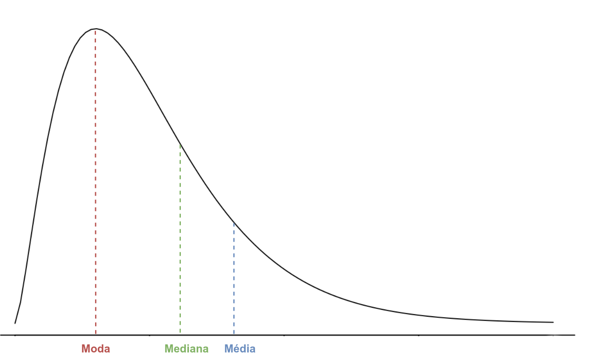

Análise exploratória de dados
Medidas resumo
Última atualização: 03 outubro, 2025
Medidas resumo
Medidas de posição: As medidas de posição são ferramentas essenciais para a análise de dados. Elas nos permitem identificar o valor típico ou central de um conjunto de observações, mostrando onde a maior parte dos dados se concentra. Existem várias medidas, e.g., a média aritmética, a mediana, a moda, a média ponderada, a média geomética, a média harmônica, a média quadrática, cúbica e biquadrática, entre outras;
Medidas de dispersão: As medidas de dispersão mostram o quanto um conjunto de observações está espalhado ou concentrado em torno de um valor central. Em outras palavras, enquanto as medidas de posição nos dizem “onde” os dados estão, as medidas de dispersão nos dizem “quão” esses dados estão distribuídos;
Medidas de Forma: As medidas de forma nos ajudam a entender o formato de uma distribuição de dados. Em vez de focar na posição (onde os dados estão) ou na dispersão (o quão espalhados eles estão), as medidas de forma nos dizem como a distribuição está “desenhada”.
Medidas de posição
Medidas de tendência central
Definição 1 (Média aritmética) A média aritmética é a medida de tendência central mais comumente usada para quantificar a centralidade de um conjunto de observações. Se \(x_1, x_2,\ldots,x_n\) representa um conjunto de \(n\) valores, a média aritmética define-se como \[\bar{x}=\frac1n\sum_{i=1}^nx_i=\frac{x_1+x_2+\cdots+x_n}{n}.\]
Exemplo 1 Considere a seguinte sequência de observações: \[1,2,3,5,10,10,12,15,20,20,30,40,40,70,80.\]
A média aritmética é dada por
\[\bar{x}=\frac{1+2+3+\cdots+40+70+80}{15}=\frac{358}{15}=23.87;\]
Definição 2 (Média ponderada) Se \(x_1, x_2,\ldots,x_n\) representa um conjunto de \(n\) valores, das quais \(n_1\) são iguais a \(x_1\), \(n_2\) são iguais a \(x_2\),…, \(n_k\) são iguais a \(x_k\), onde \(n_1+n_2+n_3+\cdots+n_k=n\), então a média ponderada define-se como \[\bar{x}_p=\frac1n\sum_{i=1}^kn_ix_i=\frac{n_1x_1+n_2x_2+\cdots+n_kx_k}{n}.\]
Média ponderada
A média ponderada também pode ser representada por \[\bar{x}_p=\sum_{i=1}^kf_ix_i,\] onde \(f_i=\frac{n_i}{n}\) representa a frequência relativa da observação \(x_i\).
Exemplo 2 Para calcular o salário médio dos funcionários de uma empresa, foi realizado o seguinte levantamento:
| Função | Quantidade | Salário (\(R\$\)) |
|---|---|---|
| Diretor | 2 | 17500 |
| Gerente | 5 | 8300 |
| Auxiliar administrativo | 10 | 2000 |
| Atendente | 16 | 1100 |
| Auxiliar TI | 5 | 1500 |
A média salarial da empresa é dada por
\[\begin{align*} \bar{x}_p&=\frac{(2\times17500)+(5\times8300)+(10\times2000)+(16\times1100)+(5\times1500)}{38}\\ &=\frac{121600}{38}=3200. \end{align*}\]
Definição 3 (Média geométrica) Seja \(x_1, x_2,\ldots,x_n\) um conjunto de \(n\) valores, a média geométrica define-se como \[\bar{x}_g=\sqrt[n]{x_1\cdot x_2\cdot\cdots\cdot x_n}=\sqrt[n]{\prod_{i=1}^nx_i}.\]
Quando usar?
A principal aplicação da média geométrica está no cálculo de taxas de crescimento médio de algo que muda ou cresce de forma multiplicativa ao longo do tempo. Isso a torna a ferramenta ideal para áreas como economia e finanças, onde os retornos, a inflação ou o crescimento de populações são processos cumulativos.
Exemplo 3 (Retorno Médio de um Investimento) Imagine que um usuário investiu \(R\$ 1000\) em uma aplicação financeira.
No primeiro ano, ela valorizou \(100\%\). Agora você tem R$ 2000;
No segundo ano, ela desvalorizou \(50\%\). Agora você tem R$1000 novamente.
Se você usasse a média aritmética, chegaria a um resultado enganoso: \[\bar{x}=\frac{100\%+(−50\%)}{2}=25\%\]
Esse cálculo sugere que, em média, você teve um retorno positivo. No entanto, sua realidade é que o valor final do seu investimento é exatamente o mesmo que o inicial.
A média geométrica, por outro lado, reflete a realidade da sua situação. Ela considera o efeito de acumulação:
Primeiro, convertimos os percentuais em fatores de crescimento, i.e.,
- 1° Ano: \(1+1.0=2.0\);
- 2° Ano: \(1−0.5=0.5\).
A média geométrica é dada por \[\bar{x}_g = \sqrt{2.0\times0.5}=1\]
Convertendo o resultado de volta para um percentual de crescimento, temos que \((1−1)\times100\%=0\%\). Ou seja, a média geométrica mostra que, em média, o seu investimento não cresceu, o que é a resposta correta e mais útil para entender o desempenho real.
Definição 4 (Média harmônica) Seja \(x_1, x_2,\ldots,x_n\) um conjunto de \(n\) valores, a média harmônica define-se como \[\bar{x}_h=\frac{n}{\sum_{i=1}^n\frac{1}{x_i}}.\]
Quando usar?
A média harmônica tem uma aplicação muito útil em finanças e economia, especialmente para calcular o preço médio de compra em situações onde você investe uma quantia fixa de dinheiro em um ativo (como ações ou moedas) ao longo do tempo.
Exemplo 4 (Preço Médio de Compra de uma Ação) Imagine que você decide investir \(R\$ 100\) em ações de uma empresa em dois momentos diferentes:
- Na primeira compra, a ação custava \(R\$ 10\);
- Na segunda compra, a ação custava \(R\$ 20\).
Qual foi o preço médio que você pagou por ação?
Se você usar a média aritmética, o resultado seria: \[\bar{x} = \frac{R\$ 10+R\$ 20}{2}=R\$ 15.\]
No entanto, essa resposta está incorreta. A média aritmética não considera que você comprou mais ações quando o preço estava baixo.
Para calcular o preço médio real primeiro calcula-se o número de ações compradas:
- Ações na 1ª compra: \(\frac{R\$ 100}{R\$ 10}=10\) ações;
- Ações na 2ª compra: \(\frac{R\$ 100}{R\$ 20}=5\) ações.
O Preço Médio Real (\(PMR\)) é calculado como: \[PMR=\frac{\text{Dinheiro total gasto}}{\text{Total de ações compradas}}=\frac{R\$ 100 +R\$ 100}{10 + 5}=\frac{R$ 200}{15}\approx R\$ 13.33.\]
Aplicando a média harmônica aos preços das ações, temos que \[\bar{x}_h=\frac{2}{\frac{1}{10}+\frac{1}{20}}=\frac{40}{3}\approx R\$13.33.\]
A média harmônica dá o resultado correto porque ela dá um peso maior ao preço menor (\(R\$ 10\)), que é onde você comprou mais ações.
Definição 5 (Mediana) Seja \(x_1, x_2,\ldots,x_n\) um conjunto de \(n\) valores. Considere \(x_{(1)}, x_{(2)},\ldots,x_{(n)}\) o conjunto de observações ordenadas em ordem crescente, i.e., \[\min\{x_1, x_2,\ldots,x_n\}=x_{(1)}\le x_{(2)}\le\cdots\le x_{(n)}=\max\{x_1, x_2,\ldots,x_n\}.\]
A mediana define-se como:
\[\begin{align*} \tilde{x}&= \begin{cases} x_{\left(\frac{n+1}{2}\right)}, & \text{para } n \text{ ímpar;}\\ \\ \frac{x_{\left(\frac{n}{2}\right)}+x_{\left(\frac{n}{2}+1\right)}}{2}, & \text{para } n \text{ par.} \end{cases} \end{align*}\]
Quando usar?
A mediana é a medida perfeita para situações em que o conjunto de dados contém valores extremos (outliers). Na economia, isso é muito comum, especialmente com indicadores de renda e riqueza.
Exemplo 5 Considere a seguinte sequência de observações: \[1,2,3,5,10,10,12,15,20,20,30,40,40,70,80.\]
A mediana é dada por \(\tilde{x}=15\).
Exemplo 6 (Renda Familiar Média de um País) Imagine um grupo de \(100\) famílias, onde \(99\) delas têm uma renda anual entre \(R\$ 20000\) e \(R\$ 80000\), mas uma única família tem uma renda de \(R\$ 1\) bilhão.
A média aritmética seria distorcida pela renda dessa única família, fazendo com que o “salário médio” pareça muito alto, não representando a realidade da maioria.
A mediana, no entanto, será a renda da família que está na 50ª posição da lista (quando as rendas são ordenadas da menor para a maior). Esse valor dará uma imagem muito mais precisa e realista do que a maioria das famílias realmente ganha.
Definição 6 (Quantis) Seja \(x_1, x_2,\ldots,x_n\) um conjunto de \(n\) valores. Considere \(x_{(1)}, x_{(2)},\ldots,x_{(n)}\) o conjunto de observações ordenadas em ordem crescente, i.e., \[x_{(1)}\le x_{(2)}\le\cdots\le x_{(n)}.\]
Define-se o quantil de ordem \(p\), denotado como \(q(p)\), onde \(p\in(0,1)\), como aquele cujas \(100p\%\) observações são menores do que \(q(p)\).
Quantis
Os quantis são consideradas medidas de tendência não-central e são indicadores de uma determinada posição na distribuição dos dados. Os quantis não buscam a centralidade da distribuição, como a média ou a mediana, mas sim dividem o conjunto de dados em partes iguais, indicando a posição de um valor em relação a todos os outros.
Exemplo 7 Alguns quantis de interesse para a análise descritiva:
I Quantil: \(q_1=q(0.25)\); II Quantil (Mediana): \(q_2=q(0.5)\); III Quantil: \(q_3=q(0.75)\).
Exemplo 8 Suponha o seguinte conjunto de dados: \[15, 5, 3, 8, 10, 2, 7, 11, 12.\] Ordenando os valores, temos que
\[2, 3, 5, 7, 8, 10, 11, 12, 15.\] A mediana é o valor \(\tilde{x}=q_2=8\). O primeiro quantil é dado por: \[q_1=\frac{3+5}{2}=\frac82=4.\] O terceiro quantil é dado por: \[q_3=\frac{11+12}{2}=\frac{23}{2}=11.5.\]
Agora, suponha que ao conjunto é acrescentado o valor \(100\), dessa forma temo a seguinte sequência: \[2, 3, 5, 7, 8, 10, 11, 12, 15, 100.\] Nesse novo conjunto, a mediana é o valor \(\tilde{x}=q_2=\frac{8+10}{2}=\frac{18}{2}=9\). O primeiro quantil é dado por \(q_1=5\) e o terceiro quantil é dado por \(q_3=12\).
Executando no R
[1] 8.111111 0% 25% 50% 75% 100%
2.0 4.0 8.0 11.5 15.0 [1] 17.3 0% 25% 50% 75% 100%
2 5 9 12 100 Definição 7 (Média aparada ou podada (trimmed)) Seja \(x_1, x_2,\ldots,x_n\) um conjunto de \(n\) valores. Considere \(x_{(1)}, x_{(2)},\ldots,x_{(n)}\) o conjunto de observações ordenadas em ordem crescente, i.e., \[x_{(1)}\le x_{(2)}\le\cdots\le x_{(n)}.\]
A \(k-\)ésima média aparada define-se como \[\bar{x}_k=\frac{1}{n-2k}\sum_{i=k+1}^{n-k}x_{(i)}.\]
Quando usar?
Ao remover os extremos, evita que valores atípicos (erros de medição, erros de digitação ou eventos raros) distorçam a média geral, tornando o resultado mais representativo do núcleo principal dos dados.
Em conjuntos de dados com distribuições assimétricas ou caudas longas (como salários ou preços de imóveis), a média aparada fornece uma estimativa de tendência central mais realista do que a média simples, que é puxada pelos valores extremos.
Exemplo 9 (Renda Familiar) Imagine que você está analisando a renda anual de \(10\) famílias em um pequeno bairro, em milhares de reais. O valores registrados foram os seguintes: \(30,35,40,45,50,55,60,65,70,400\).
- Cálculo da Média Aritmética (Simples)
A média simples é o ponto de partida:
\[ \text{Média} = \frac{(30 + 35 + \dots + 70 + 400)}{10} = \frac{850}{10} = 85\]
A renda média é de R$ 85.000.
O problema: Esse valor de R$ 85.000 é muito maior do que a renda da maioria das famílias (que está entre R$ 30.000 e R$ 70.000). O valor de R$ 400.000 é um outlier (o empresário do bairro) que distorceu completamente a percepção da renda típica.
- Cálculo da Média Aparada (20%)
Para corrigir essa distorção, aplicamos uma média aparada de 20%. Isso significa que removemos os 20% menores valores e os 20% maiores valores.
Total de valores: 10
20% de 10=2 valores.Aparando os dados:
Remova os 2 valores menores: 30,35
Remova os 2 valores maiores: 70,400Conjunto de dados aparado: [40,45,50,55,60,65]
Cálculo da Média Aparada (20%):
\[ \text{Média Aparada} = \frac{(40 + 45 + 50 + 55 + 60 + 65)}{6} = \frac{315}{6} = 52,5\]
A renda média aparada é de R$ 52.500.
Conclusão Econômica
A média aparada de R$ 52.500 é um indicador muito mais robusto e representativo da renda típica das famílias no bairro.
Média Simples (R$ 85.000): É alta e sugere que o bairro é mais rico do que realmente é, devido ao efeito do outlier.
Média Aparada (R$ 52.500): Despreza a influência dos extremos (os mais pobres e o mais rico) para fornecer um valor que descreve com mais precisão a tendência central do grupo.Em resumo, na economia, onde a distribuição de riqueza e renda é frequentemente assimétrica e contém valores extremos, a média aparada é uma ferramenta valiosa para ter uma visão mais honesta da realidade econômica de um grupo.
Definição 8 (Moda) A moda é uma medida de tendência central que representa o valor mais frequente.
Quando usar?
A moda é particularmente útil quando lidamos com dados categóricos ou discretos (que não são contínuos), e a pergunta é sobre popularidade ou preferência.
Exemplo 10 (Gestão de Estoque e Produção) Uma empresa de calçados dificilmente vai fabricar um tipo de sapato, baseado na média aritmética do tamanho do pé dos consumidores, por exemplo, \(39.5\) cm.
Para otimizar sua produção, a empresa precisa saber qual é o tamanho mais popular.
Ao analisar os dados de vendas, a moda indicará qual é o número mais vendido, por exemplo, tamanho \(40\).
Com essa informação, a empresa pode otimizar sua produção e gerenciar seu estoque, garantindo que o produto mais procurado esteja sempre disponível, enquanto evita produzir em excesso tamanhos menos populares.
A moda é usada em pesquisa de mercado para identificar o produto, sabor ou serviço mais popular, orientando as estratégias de marketing e desenvolvimento de produtos.
Relação entre média, mediana e moda
Média - Moda = \(3\,\)(Média - Mediana)
Relação empírica entre a média, a mediana e a moda
Relação empírica entre a média, a mediana e a moda
Relação empírica entre a média, a mediana e a moda
Medidas de dispersão
Definição 9 (Variância) Seja \(x_1, x_2,\ldots,x_n\) um conjunto de \(n\) valores. A variância define-se como \[s^2=\frac1{n-1}\sum_{i=1}^n(x_i-\bar{x})^2,\] onde \(\bar{x}=\frac1n\sum_{i=1}^nx_i\).
Outra forma
Outra forma de calcular a variância é dada por \[s_*^{2}=\frac1{n}\sum_{i=1}^n(x_i-\bar{x})^2.\] Nesse caso, teriamos a média dos desvíos médios ao quadrado. Quando \(n\) é suficientemente grande, as propriedades estatísticas de \(s^2\) e \(s_*^2\) são similares. Em aplicações práticas usaremos \(s^2\) para quantificar o valor da variância de um conjunto de dados.
Algumas considerações
- A variância sempre é um valor não-negativo, i.e., \(s^2\ge0\);
- A variância é invariante à adição (ou substração) de um valor constante aos dados, i.e., as variâncias das sequências \(x_1,x_2,\ldots,x_n\) e \(x_1\pm a,x_2\pm a,\ldots,x_n\pm a\), com \(a\) constante, são iguais;
- Se a sequência é multiplicada por uma constante \(a\), a variância é multiplicada pelo quadrado da constante, i.e., se a variância da sequência \(x_1,x_2,\ldots,x_n\) é \(s^2\), então a variância do conjunto \(ax_1,ax_2,\ldots,ax_n\) é dada por \(a^2\,s^2\);
Desvio padrão
O desvio padrão define-se como \[s=\sqrt{\frac1{n-1}\sum_{i=1}^n(x_i-\bar{x})^2}=\sqrt{s^2}\]
e é a medida de dispersão mais usada na prática, pois apresenta as mesmas unidades dos dados.
Exemplo 11 No mundo dos investimentos, a dispersão dos retornos de um ativo financeiro (como uma ação, um fundo ou um título) é sinônimo de volatilidade. O desvio padrão é a métrica padrão que os analistas e investidores usam para entender o risco de um investimento.
O que ele mede? O quanto os retornos de um ativo tendem a se desviar de seu retorno médio esperado;
Regra básica: Quanto maior o desvio padrão de um ativo, maior é o seu risco e sua volatilidade.
Considere o seguinte cenário: Um investidor está comparando dois fundos de investimento:
| Fundo | Retorno anual médio (\(\bar{x}\)) | Desvio padrão (\(s\)) |
|---|---|---|
| A | \(8\%\) | \(3\%\) |
| B | \(8\%\) | \(15\%\) |
Baseados na média, ambos os fundos têm o mesmo retorno esperado (\(8\%\));
Baseados no desvio padrão, o Fundo A é um investimento de baixo risco. O Fundo B é um investimento de alto risco. Isso indica uma volatilidade muito maior, com a possibilidade de perdas significativas.
Dessa forma, o investidor que prioriza a segurança (baixo risco) escolherá o Fundo A, enquanto o investidor que aceita grandes flutuações em busca de ganhos potencialmente maiores escolherá o Fundo B.
Amplitude interquantil
Uma medida de dispersão alternativa ao desvio padrão é a amplitude interquantil, definida como a diferença entre o terceiro e primeiro quantil, i.e., \[AIQ = q_3 - q_1.\]
Definição 10 (Coeficiente de variação) O Coeficiente de Variação (\(CV\)) é uma medida estatística que permite comparar a dispersão (risco ou variabilidade) de dois ou mais conjuntos de dados que possuem médias muito diferentes ou que estão em unidades de medida distintas. O \(CV\) é calculado como \[CV=\frac{s}{\bar{x}}\times 100\%.\]
Exemplo 12 Suponha que um investidor quer comparar o risco de dois ativos financeiros:
| Ativo | Retorno médio (\(\bar{x}\)) | Desvio padrão (\(s\)) |
|---|---|---|
| A | \(R\$\, 10\) | \(R\$\, 2\) |
| B | \(R\$\, 100\) | \(R\$\, 5\) |
Se olharmos apenas para o desvio padrão, os dados sugerem que o Ativo B (\(R\$\, 5\)) tem um risco absoluto maior que o Ativo A (\(R\$\, 2\)). Mas, utilizando o \(CV\), temos que:
- Ativo A: \(CV=\frac{2}{10}=0.2\) ou \(20\%\);
- Ativo B: \(CV=\frac{5}{100}=0.05\) ou \(5\%\).
O resultado do \(CV\) sugere que o Ativo A é muito mais arriscado (volátil) em relação ao seu próprio retorno médio do que o Ativo B.
Conclusão: O Ativo B, apesar de ter um desvio padrão absoluto maior, é o mais estável e, portanto, o de menor risco relativo. O Coeficiente de Variação remove as diferenças de escala (\(R\$\, 10\) vs \(R\$\, 100\)) para permitir essa comparação de risco real.
Definição 11 (Desvio Absoluto Médio) O desvio absoluto médio (\(D_m\)) define-se como a média aritmética dos módulos dos desvios tomados em relação à média, i.e., \[D_m=\frac1n\sum_{i=1}^n\left|x_i-\bar{x}\right|\]
Quando usar?
O \(D_m\) é uma medida de dispersão que se destaca pela sua simplicidade de interpretação. Enquanto o desvio padrão eleva as diferenças ao quadrado (o que o torna mais complexo de explicar), o \(D_m\) utiliza o valor absoluto, respondendo à pergunta de forma mais direta.
Mas, apesar de sua clareza, o \(D_m\) não é a medida de dispersão mais utilizada em estatística inferencial. Isso ocorre porque a função de valor absoluto (usada para eliminar o sinal negativo) não é suave (diferenciável), o que dificulta o uso do \(D_m\) em cálculos avançados de otimização e em modelos de regressão, onde a variância e o desvio padrão são matematicamente superiores.
Exemplo 13 O gerente de uma loja de café está analisando o desempenho de seus funcionários no preparo de bebidas. O objetivo é a consistência.
Cenário: Tempo (em segundos) que 5 funcionários levaram para preparar um cappuccino.
| Funcionário | Tempo de Preparo (seg) | Desvio da Média |
|---|---|---|
| 1 | \(25\) | \(∣25−30∣=5\) |
| 2 | \(28\) | \(∣28−30∣=2\) |
| 3 | \(30\) | \(∣30−30∣=0\) |
| 4 | \(32\) | \(∣32−30∣=2\) |
| 5 | \(35\) | \(∣35−30∣=5\) |
A média é dada por \[\bar{x}=\frac{25+28+30+32+35}{5}=\frac{150}{5}=30 \text{ segundos}.\] Dessa forma, o \(D_m\) é calculado como \[D_m=\frac{5+2+0+2+5}{5}=\frac{14}{5}=2.8 \text{ segundos}.\]
Conclusão para o Gerente: A média de preparo é de \(30\) segundos, mas o desvio médio é de \(2.8\) segundos. Isso significa que, em média, o tempo de preparo de cada funcionário varia em \(2.8\) segundos da média ideal.
Essa métrica é uma forma clara e direta de avaliar a consistência da equipe e pode ser usada para definir metas de treinamento.
Definição 12 (Desvio Absoluto Mediano) O desvio absoluto mediano define-se como a mediana dos módulos dos desvios medianos, i.e., \[MAD=\frac1n\sum_{i=1}^n\left|x_i-\bar{x}\right|.\]
\(MAD\) vs desvio padrão
Em cenários com dados atípicos, o \(MAD\) pode ser utilizado como uma alternativa razoável para quantificar a dispersão do conjunto de dados.
Em geral, quando o conjunto de dados segue uma distribuição normal (simétrica), existe uma relação teórica entre o \(MAD\) e o desvio padrão (\(s\)), dada por: \[s=1.4826022\times MAD,\] onde a constante de escala (\(1.4826022\)) permite melhorar a aproximação. Isso permite que o \(MAD\) possa ser utilizado como uma alternativa robusta ao desvio padrão, mantendo a interpretabilidade para dados que se aproximam da normalidade, mas que são contaminados por dados atípicos.
Quando usar?
O \(MAD\) é uma medida robusta de dispersão, sendo mais resiliente à presença de dados atípicos (outliers) no conjunto de dados. No desvio padrão, as distâncias da média são elevadas ao quadrado, portanto, grandes desvios são ponderados com mais intensidade e, portanto, dados atípicos podem influenciá-la com maior facilidade. No MAD, os desvios de um pequeno número de dados atípicos são irrelevantes.
Exemplo 14 (Volatilidade do Setor de Tecnologia) Suponha que você está analisando a volatilidade no crescimento anual de todas as empresas de tecnologia em uma cidade.
O setor é composto por \(995\) pequenas e médias startups (crescimento anual estável) e \(5\) empresas gigantes (“unicórnios”) que tiveram um crescimento exponencial e atípico;
O crescimento exagerado e desproporcional dessas 5 gigantes puxaria o desvio padrão para um valor muito alto. O resultado sugere que, estatisticamente, o setor pareceria ser de altíssimo risco e volatilidade, o que não é verdade para a maioria das \(995\) startups menores.
Ao usar o \(MAD\), você se concentra na mediana do crescimento e na mediana das distâncias. O \(MAD\) ignora o impacto extremo dos \(5\) unicórnios, oferecendo uma medida de volatilidade que reflete a realidade da empresa típica do setor.
Conclusão Econômica: Neste caso, o \(MAD\) oferece uma visão mais robusta do risco subjacente. Ele permite ao analista financeiro ou gestor de políticas públicas separar o “barulho” dos dados atípicos que influenciam o risco real e sistêmico do mercado. Se o \(MAD\) é baixo, a maioria das empresas é consistente, mesmo que algumas poucas sejam exceções gigantescas.
Medidas de forma
Definição 13 (Assimetria)
Resumo dos 5 números
Os cinco valores, \(x_{(1)}, q1, q2, q3\) e \(x_{(n)}\) são importantes para se ter uma boa noção da assimetria da distribuição dos dados. Para uma distribuição simétrica (ou aproximadamente simétrica), deveríamos ter, por exemplo:
- \(q_2-x_{(1)} \approx x_{(n)}-q_2\);
- \(q_2-q_1 \approx q_3-q_2\);
- \(q_1-x_{(1)} \approx x_{(n)}-q_3\);
Definição 14 (Curtose)
Exercício 1 (Obesidade na Ufes) A obesidade entre estudantes é um problema de saúde pública crescente no Brasil, sendo mais elevada entre adolescentes, especialmente os de baixa renda, que enfrentam uma combinação de excesso de peso e desnutrição.
Objetivo: Suponha que nosso objetivo é avaliar a IMC nos estudantes da Ufes.
De acordo com as informações da plataforma InfoUfes, a universidade conta com aproximadamente 16.705 discentes.
Claramente, resulta insustentável medir o IMC de todos os estudantes. Dessa forma, resulta interessante selecionar um grupo de estudantes que reflita bem as características dos estudantes, e não somente alguns, como por exemplo: atletas ou alguns estudantes acima do peso.
Identifique o(s) parâmetro(s) e as variáveis nesse estudo.
Exercícios
Sugestão de exercícios
- Mostre que:
\[\begin{align*} &a.\, \sum_{i=1}^n(x_i-\bar{x})f_i=0, \quad \text{onde } f_i=\frac{n_i}{n}, \text{ para } i=1,2,\ldots, n; \\ &b.\, \sum_{i=1}^n(x_i-\bar{x})^2\le\sum_{i=1}^n(x_i-x_0)^2, \end{align*}\] onde \(x_0\ne\bar{x}\) é uma valor arbitrário.
- Seja \(x_1,x_2,\ldots,x_n\) um conjunto de observações, cuja média aritmética é dada por \(\bar{x}\). Mostre que, a média aritmética do conjunto \(x_1\pm a,x_2\pm a,\ldots,x_n\pm a\), onde \(a\) é um valor constante, é dada por \(\bar{x}\pm a\).
Seja \(x_1,x_2,\ldots,x_n\) um conjunto de observações, tal que, \(n_1\) números têm média \(\bar{x}_1\), \(n_2\) números têm média \(\bar{x}_2,\ldots, n_k\) números têm média \(\bar{x}_k\). Mostre que, a média aritmética do conjunto de observações é dada por \[\bar{x}=\frac{\sum_{j=1}^k\bar{x}_jn_j}{\sum_{j=1}^kn_j}.\]
Mostre que o produtos dos quocientes de cada valor de um conjunto de números pela média geométrica do conjunto é igual a 1, i.e., \[\frac{x_1}{\bar{x}_g}\frac{x_2}{\bar{x}_g}\cdots\frac{x_n}{\bar{x}_g}=1.\]
Seja \(x_1,x_2,\ldots,x_n\) um conjunto de observações. Mostre que: \[\bar{x}_h\le\bar{x}_g\le\bar{x}.\]
Seja \(x_1,x_2,\ldots,x_n\) um conjunto de observações. Mostre que \(S_n^{2}=\frac{1}{2n(n-1)} \sum_{i=1}^{n}\sum_{j=1}^{n} (x_{i} - x_{j})^2\), para \(n>1\).
Política de proteção aos direitos autorais
O conteúdo disponível consiste em material protegido pela legislação brasileira, sendo certo que, por ser o detentor dos direitos sobre o conteúdo disponível na plataforma, o LECON e o NEAEST detém direito exclusivo de usar, fruir e dispor de sua obra, conforme Artigo 5o, inciso XXVII, da Constituição Federal e os Artigos 7o e 28o, da Lei 9.610/98. A divulgação e/ou veiculação do conteúdo em sites diferentes à plataforma e sem a devida autorização do LECON e o NEAEST, pode configurar violação de direito autoral, nos termos da Lei 9.610/98, inclusive podendo caracterizar conduta criminosa, conforme Artigo 184o, §1o a 3o, do Código Penal. É considerada como contrafação a reprodução não autorizada, integral ou parcial, de todo e qualquer conteúdo disponível na plataforma.

Material elaborado pela equipe LECON/NEAEST: Alessandro J. Q. Sarnaglia, Bartolomeu Zamprogno, Fabio A. Fajardo, Luciana G. de Godoi e Nátaly A. Jiménez.